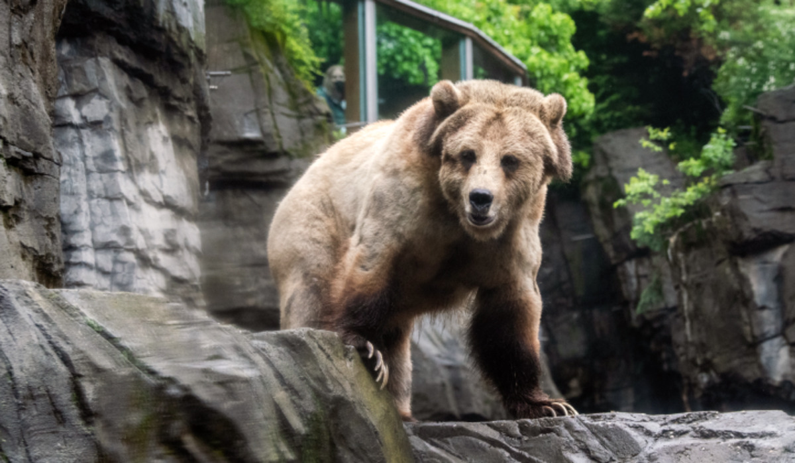
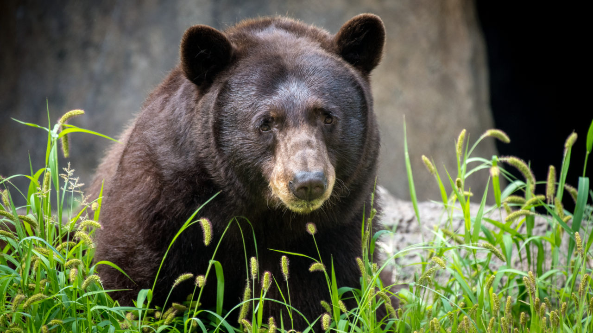

- Ollie 
- Mona 
The grizzly bear, also known as the North American brown bear or simply grizzly, is a population or subspecies of the brown bear inhabiting North America. In addition to the mainland grizzly, other morphological forms of brown bear in North America are sometimes identified as grizzly bears. Click here for more information on Grizzley Bears.
The American black bear, also known as the black bear, is a species of medium-sized bear endemic to North America. It is the continent's smallest and most widely distributed bear species. The American black bear is an omnivore, with a diet varying greatly depending on season and location. Click here for more information on Black Bears.